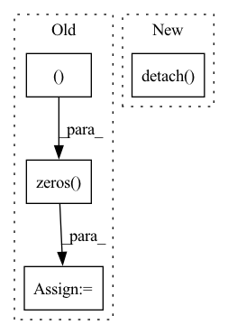

Pattern ID :30488

Before Change
seasonal_forecast = [torch.zeros((target.size(0), timesteps), dtype=torch.float32, device=self.device)]
backcast = target // initialize backcast
forecast = torch.zeros(
(target.size(0), self.hparams.prediction_length), dtype=torch.float32, device=self.device
)
for block in self.net_blocks:
// evaluate block
backcast_block, forecast_block = block(backcast)
After Change
backcast_block, forecast_block = block(backcast)
// add for interpretation
full = torch.cat([backcast_block.detach(), forecast_block.detach()], dim=1)
if isinstance(block, NBEATSTrendBlock):
trend_forecast.append(full)
elif isinstance(block, NBEATSSeasonalBlock):
In pattern: SUPERPATTERN
Frequency: 3
Non-data size: 4
Instances
Fragment ID: 90238928
Project Name: jdb78/pytorch-forecasting
Commit Name: 94dbed3dafdf3f4c76c56e2326f047a0de92a360
Time: 2020-07-14
Author: beitner.jan@bcg.com
File Name: pytorch_forecasting/models/nbeats/__init__.py
M Class Name: NBeats
N Class Name: NBeats
M Method Name: forward(2)
N Method Name: forward(2)
M Parent Class: BaseModel
N Parent Class: BaseModel
M File Name: pytorch_forecasting/models/nbeats/__init__.py
N File Name: pytorch_forecasting/models/nbeats/__init__.py
M Start Line: 95
M End Line: 120
N Start Line: 107
N End Line: 127
'>
Before Change
model.eval()
class_num = data_loader.dataset.cls_num
conf_mat = np.zeros((class_num, class_num))
loss_sigma = []
path_error = []
for i, data in enumerate(data_loader):
inputs, labels, path_imgs = data
// inputs, labels = data
inputs, labels = inputs.to(device), labels.to(device)
outputs = model(inputs)
loss = loss_f(outputs.cpu(), labels.cpu())
// 统计混淆矩阵
_, predicted = torch.max(outputs.data, 1)
for j in range(len(labels)):
cate_i = labels[j].cpu().numpy()
pre_i = predicted[j].cpu().numpy()
conf_mat[cate_i, pre_i] += 1.
if cate_i != pre_i:
path_error.append((cate_i, pre_i, path_imgs[j])) // 记录错误样本的信息
After Change
loss = loss_f(outputs.cpu(), labels.cpu())
loss_list.append(loss.item())
loss_mean = np.mean(loss_list)
acc_batch_list.append((1 - np.abs(outputs.cpu().detach().numpy() - labels.cpu().detach().numpy())))
ocean_acc = np.concatenate(acc_batch_list, axis=0).mean(axis=0)
acc_avg = ocean_acc.mean()
'>
Fragment ID: 90238930
Project Name: liaorongfan/deeppersonality
Commit Name: 565a883600a2f9be36416c98383ef54294da8ab1
Time: 2021-05-23
Author: 15670381505@163.com
File Name: dpcv/engine/portrait_model_trainer.py
M Class Name: ModelTrainer
N Class Name: ModelTrainer
M Method Name: valid(4)
N Method Name: valid(4)
M Parent Class: object
N Parent Class: object
M File Name: dpcv/engine/portrait_model_trainer.py
N File Name: dpcv/engine/portrait_model_trainer.py
M Start Line: 60
M End Line: 87
N Start Line: 54
N End Line: 71
'>
Before Change
def calculate_unit_counts_bow_numpy(obs):
unit_counts = obs["unit_counts"]
print("unit_counts:", unit_counts) if debug else None
unit_counts_bow = np.zeros((1, SFS.unit_counts_bow))
for u_c in unit_counts:
unit_type = u_c[0]
unit_count = u_c[1]
After Change
def calculate_unit_counts_bow_numpy(obs):
ret = calculate_unit_counts_bow(obs)
ret = ret.detach().cpu().numpy()
return ret
'>
Fragment ID: 90238933
Project Name: liuruoze/mini-alphastar
Commit Name: a115d8c35ded3fa3d608df5576d72a17cf941787
Time: 2021-12-10
Author: liuruoze@163.com
File Name: alphastarmini/lib/utils.py
M Class Name: AnonimousClass
N Class Name: AnonimousClass
M Method Name: calculate_unit_counts_bow_numpy(1)
N Method Name: calculate_unit_counts_bow_numpy(1)
M Parent Class:
N Parent Class:
M File Name: alphastarmini/lib/utils.py
N File Name: alphastarmini/lib/utils.py
M Start Line: 100
M End Line: 119
N Start Line: 98
N End Line: 100